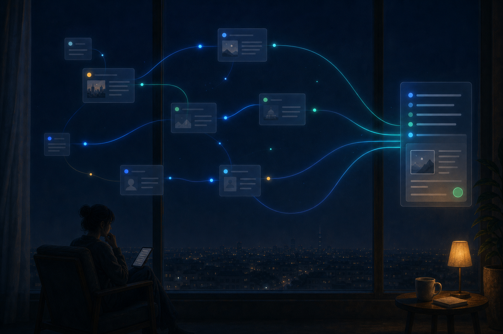

Hero Local Motion Preview
Base image remains still. Motion is limited to the green confirmation signal.
Still image

Local generated-feel composite
This version avoids whole-image breathing. It keeps the image still and only pulses the green confirmation signal.